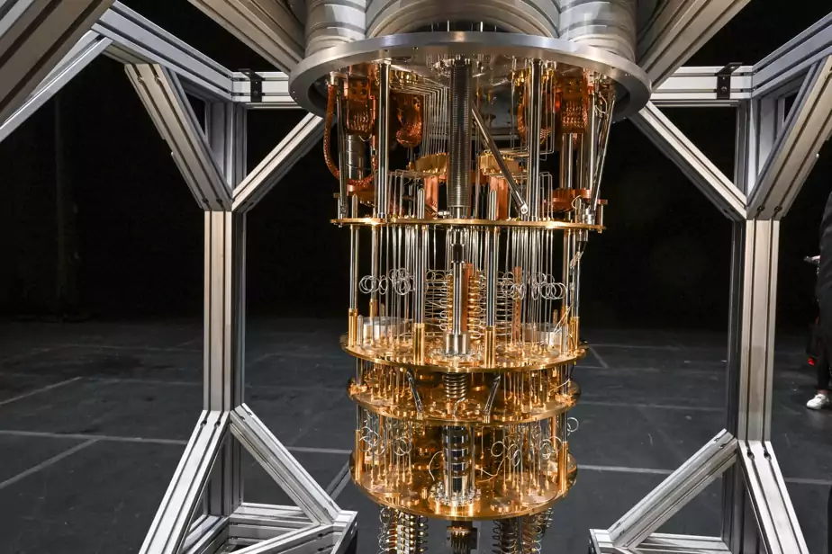

Date de publication : 25 octobre 2023
Pour lire l'article complet, cliquez sur le lien suivant : Attention, révolution en cours
En 2023, l'ordinateur quantique d'IBM, le Quantum System One, installé à Bromont, dispose de 127 qubits. Bien que certains scientifiques estiment qu'un million de qubits seraient nécessaires pour une machine pleinement fonctionnelle, le développement de ces ordinateurs est en cours malgré les défis. Actuellement, ces ordinateurs ne sont pas encore prêts à remplacer les ordinateurs classiques pour des tâches courantes, comme les déclarations de revenus, mais ils sont utilisés pour la recherche et l'enseignement. Les progrès dans ce domaine sont comparables aux débuts de l'informatique classique, où les applications potentielles n'étaient pas encore bien définies. Les chercheurs explorent les applications possibles, notamment dans la cryptographie et l'optimisation des chaînes logistiques, et l'impact futur pourrait être significatif. La communauté scientifique et les entreprises doivent se préparer à une révolution potentielle en combinant l'informatique quantique avec les technologies existantes.
